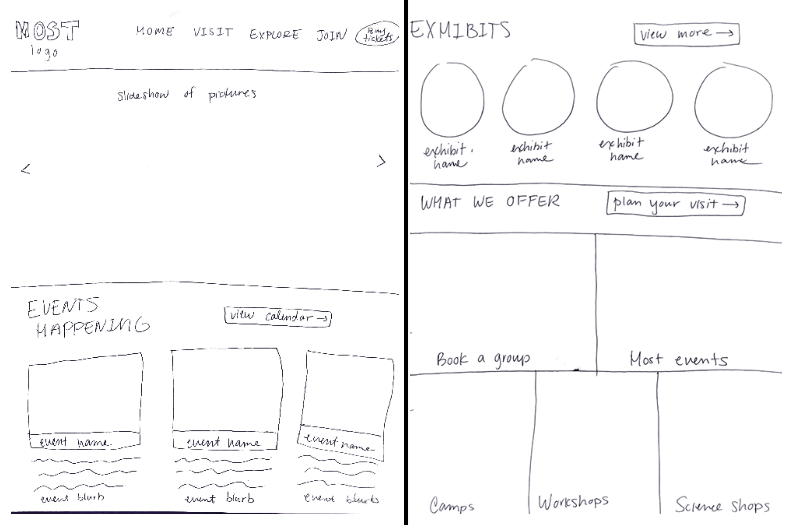

I re-designed and developed the home page and plan your visit page for the MOST museum in Syracuse, NY. The original website is outdated and does not fully capture the atmosphere of the MOST museum. I wanted to encompass the brand of the museum while emphasizing the events and exhibits that they offered.

My design process started off with a list of reasons on why someone would visit a museum's website
and then I moved forward from there. I thought about what designs would appeal most to children and coded
geometric shapes, big pictures, and playful colors that would match the MOST brand. I wanted the front page to
be kid-friendly while also displaying the most important information for parents to view.